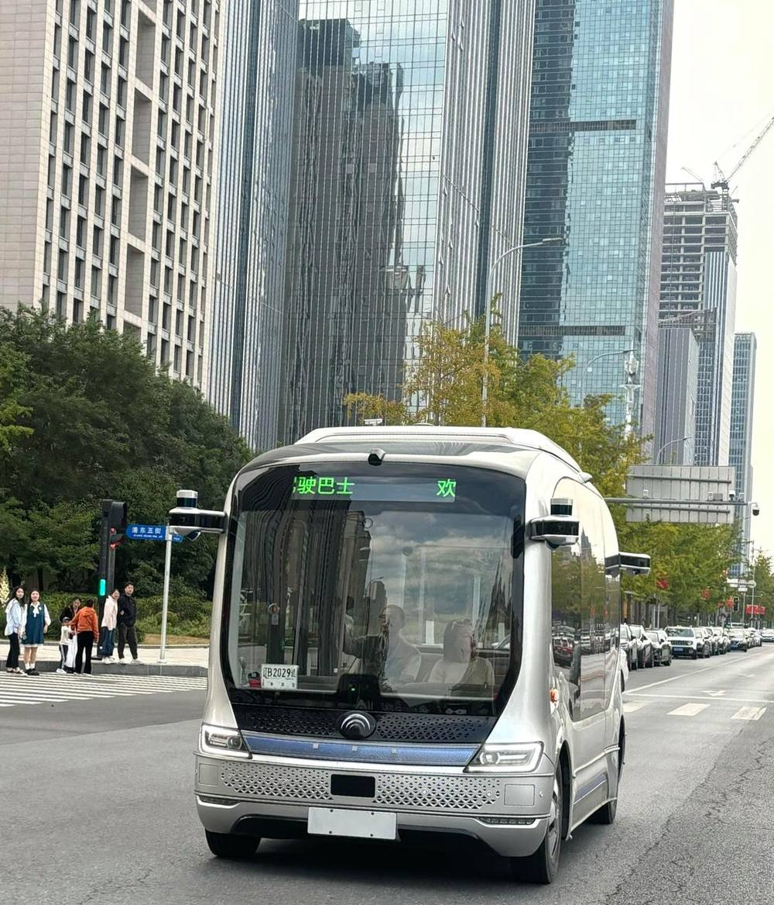
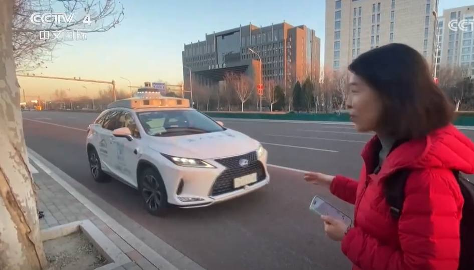
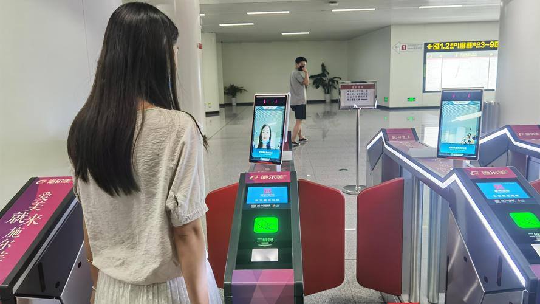
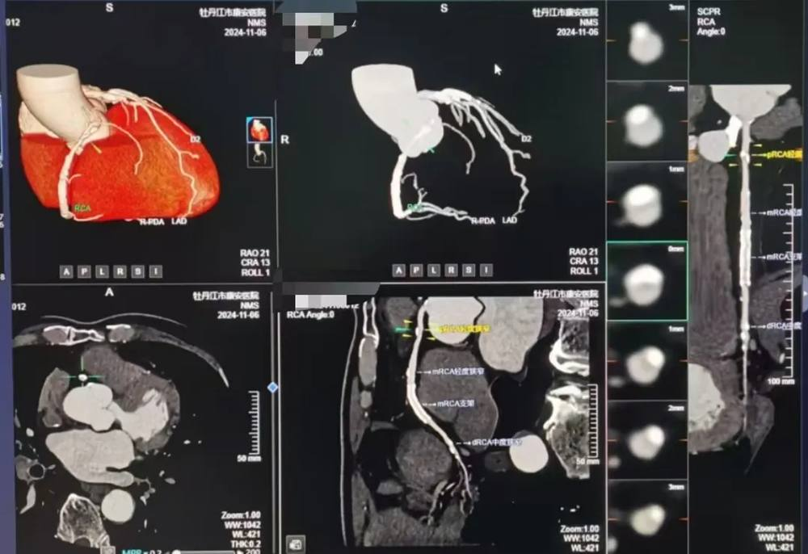
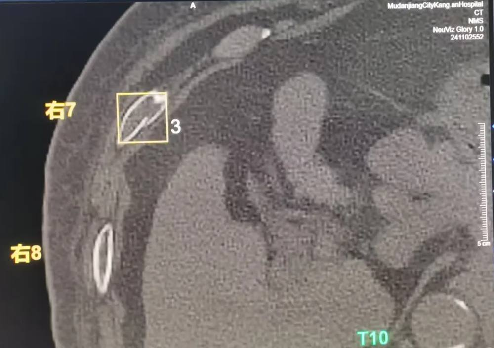

第 1 页 · 2 人工智能典型应用
2 人工智能典型应用

模块1：初探人工智能


第 2 页 · 幻灯片
（本页无可提取文字，含图形/图片内容）
第 3 页 · 一、自动驾驶
一、自动驾驶


第 4 页 · 二、人脸识别
二、人脸识别

第 5 页 · 三、医学影像处理
三、医学影像处理


AI智能影像辅助诊断技术还在骨折筛查与定位，冠状动脉成像及病变诊断及分析方面发挥这越来越重要的作用
第 6 页 · 四、机器人
四、机器人
第 7 页 · 五、智能家居
五、智能家居
第 8 页 · 六、媒体娱乐
六、媒体娱乐

第 9 页 · 列举AI的应用场景
列举AI的应用场景

AI在千行百业已创新应用，填写下表。
| 应用场景 | 简述AI赋能的价值点 | 是否有更深层次的改变 | 你的建议或看法 |
| ？ | |||
| ？ | |||
| ？ | |||
| ？ | |||
| ？ | |||
| …… |
第 10 页 · 学生分享及教师点评
学生分享及教师点评

| 分享要点 | 分值 | 计分 | 教师点评 |
| 1、你使用了哪些AI工具来辅助你完成任务？ | 15 | 主动使用AI工具 | |
| 2、你与同学进行了哪些讨论和协助？ | 15 | 集思广益、团结协助 | |
| 3、你最看好或在意AI在哪个行业的应用？ | 30 | 积极思考、善于总结创新 | |
| 4、你是否在使用AI改变你的生活或学习？ | 20 | 积极求变，工具赋能 | |
| 5、你对AI的态度或主张是？ | 10 | 理性分析，敢于质疑 | |
| 6、其它（含逻辑、表情、主动、清晰、流畅、自信等） | 0-10 | 能说、会思、善用、精技 |
第 11 页 · 子任务3：语音提示处理
子任务3：语音提示处理

创新应用AI
防范伦理风险